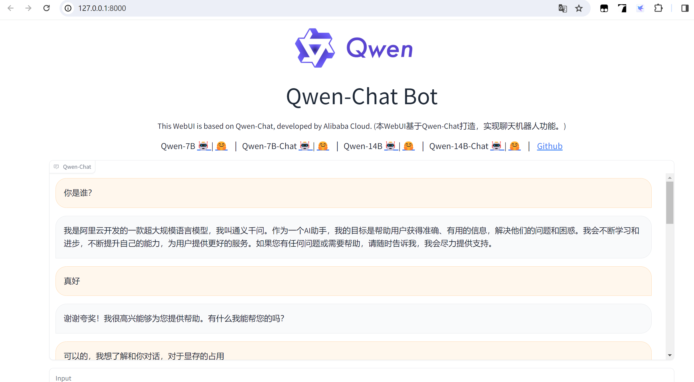
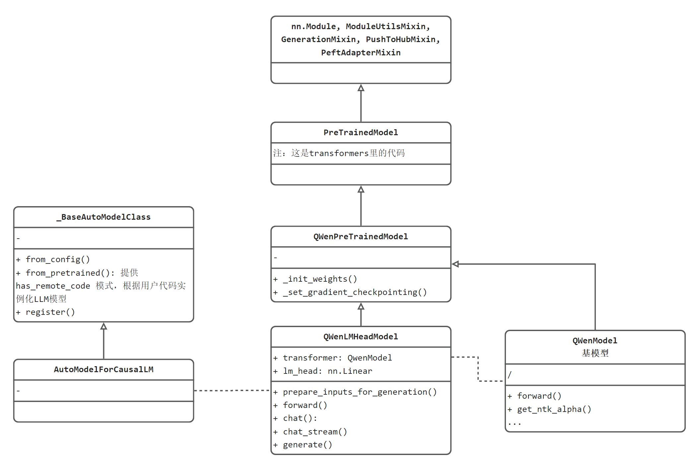
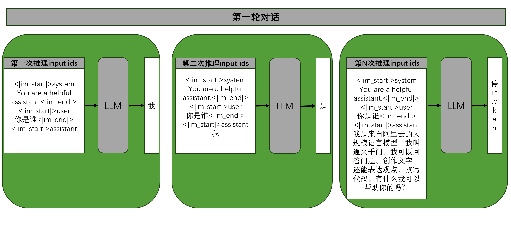
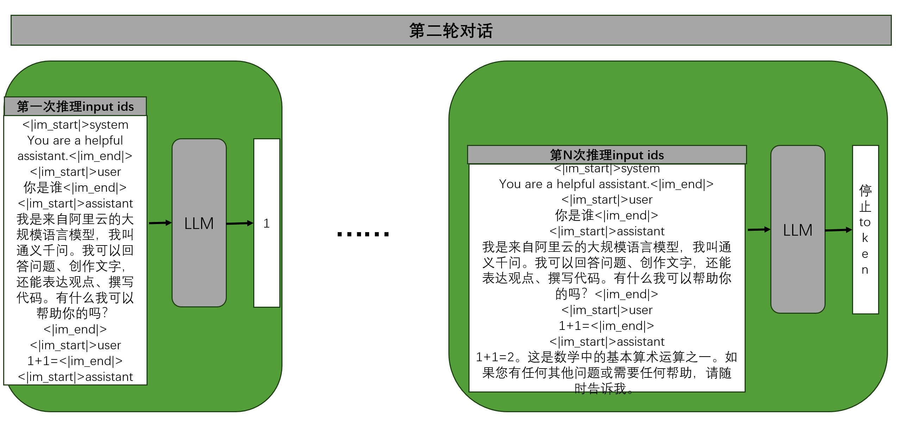
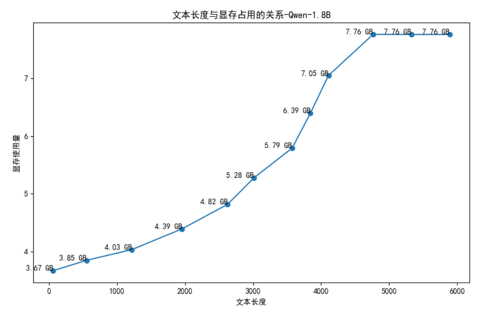
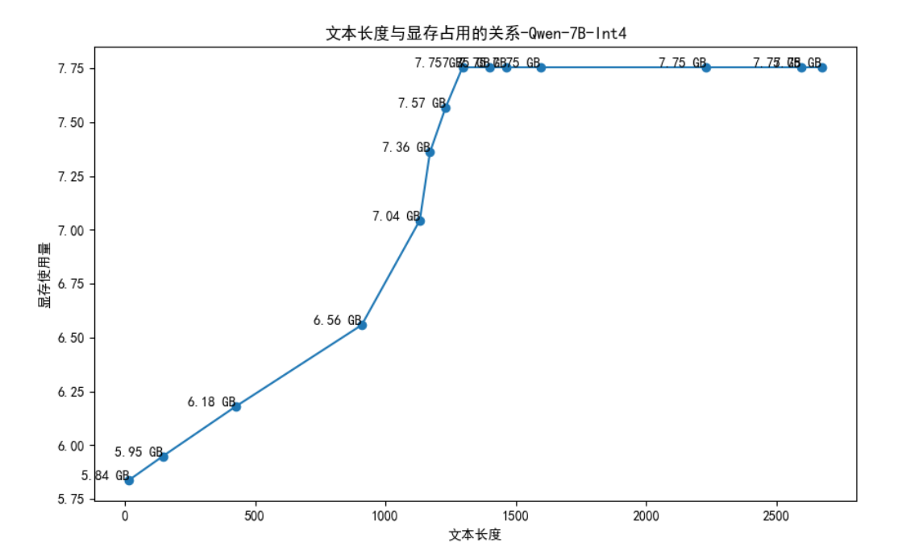

10.1 Qwen部署与分析
前言
随着大语言模型的出圈及广泛应用落地，LLM技术已成为新一代人工智能、深度学习的必备技能，本节将介绍当下较为热门的开源大语言模型Qwen的安装及代码、流程、显存消耗分析。
本节内容有3个内容，有助于理解LLM模型，包括：
- Qwen模型代码结构组织与接口分析：可了解LLM模型的代码是如何设计的
- LLM模型多轮对话机制：逐步剖析LLM的推理机制，多轮对话时如何组装历史聊天记录的
- LLM模型显存占用：了解显存随着上下文长度的增加的变化趋势
Qwen简介
通义千问是阿里巴巴集团Qwen小组研发的大语言模型，自2023年4月开放测试8月开源7B模型，12月开源72B；到2024年3月开放了Qwen1.5-32B，可最大限度兼顾性能、效率和内存占用的平衡，Qwen系列不断更新，为开源社区做出了贡献。
Qwen系列产品
通义千问仅是Qwen团队产品之一，属于对话模型，能理解人类语言、生成内容，作为用户生活和工作的智能助手。
- 通义，取自《汉书》中的“天地之常经，古今之通义也”，有“普遍适用的道理与法则”之意。官网展示，通义是致力于实现类人智慧的通用智能
- 千问，千万次的问，千万的学问。
除了通义千问，Qwen团队还有其他大模型，共计10个（截止至2024年4月16日），分别是：
通义千问、通义万相、通义听悟、通义点金、通义灵码、通义法睿、通义星尘、通义仁心、通义晓蜜和通义智文。
Qwen目前开源Qwen1.5系列，属于2.0的pre版，相较于1.0在更方面指标均有所提升，并且开放了0.5B, 1.8B, 4B, 7B, 14B, 32B, 72B多个尺寸，同时有base和chat版，也有多种精度fp16, int8, int4。开发者可根据不同的场景、硬件平台、任务复杂度来选择模型。
为了更全面了解Qwen系列产品，推荐以下链接：
- 官方产品主页：https://tongyi.aliyun.com/
- Qwen团队github主页：https://github.com/QwenLM
- Qwen开源文档：https://qwen.readthedocs.io/en/latest/
- Qwen技术报告：https://arxiv.org/abs/2309.16609
- Qwen的HuggingFace主页：https://huggingface.co/Qwen
本地部署安装
Qwen代码提供了命令交互案例，运行成功后，如下所示：
User: 你是谁 Qwen-Chat: 我是来自阿里云的大规模语言模型，我叫通义千问。我可以回答各种问题、创作文字，还能表达观点、撰写代码。 User: 你还有什么能力？ Qwen-Chat: 我还可以将文本从一种语言翻译成另一种语言，总结文本，生成文本，写故事，分析情绪，提供建议，开发算法，编写代码以及任何其他基于语言的任务。 User>
为了成功安装Qwen，建议严格阅读github的readme，下面说明本次部署的环境、版本配置。
Qwen官方github建议的版本要求如下：
- python 3.8 and above
- pytorch 1.12 and above, 2.0 and above are recommended
- transformers 4.32 and above
- CUDA 11.4 and above are recommended (this is for GPU users, flash-attention users, etc.)
代码和模型，采用的事Qwen，不是Qwen1.5，这两个是不同的代码仓库，一定要注意。
笔者的安装环境如下：
- win11
- python 3.10.14
- pytorch 2.2.0
- transformers 4.39.0
- CUDA 12.1
- RTX 4060 Laptop 8GB
- RAM 32GB
安装步骤
第一步，下载Qwen代码
git clone https://github.com/QwenLM/Qwen.git
第二步，安装基础python包
pip install -r requirements.txt
pip install -r requirements_web_demo.txt -i https://pypi.tuna.tsinghua.edu.cn/simple
如果需要量化版，则需要安装对应的autogptq等；
pip install auto-gptq optimum
第三步 下载模型权重
根据显存大小，选择合适的模型，这里选择1.8B进行使用，通过github信息，可大约知道不同尺寸模型显存需求。
| Model | Release Date | Max Length | System Prompt Enhancement | # of Pretrained Tokens | Minimum GPU Memory Usage of Finetuning (Q-Lora) | Minimum GPU Usage of Generating 2048 Tokens (Int4) | Tool Usage |
|---|---|---|---|---|---|---|---|
| Qwen-1.8B | 23.11.30 | 32K | ✅ | 2.2T | 5.8GB | 2.9GB | ✅ |
| Qwen-7B | 23.08.03 | 32K | ❎ | 2.4T | 11.5GB | 8.2GB | ✅ |
| Qwen-14B | 23.09.25 | 8K | ❎ | 3.0T | 18.7GB | 13.0GB | ✅ |
| Qwen-72B | 23.11.30 | 32K | ✅ | 3.0T | 61.4GB | 48.9GB | ✅ |
Qwen-1.8B-chat下载
下载有两个地方，分别是HF和国内的ModelScope社区
- HuggingFace下载：https://huggingface.co/Qwen/Qwen-1_8B-Chat/tree/main
- ModelScope: https://www.modelscope.cn/models/qwen/Qwen-1_8B-Chat/files
模型除了权重文件，还有一系列配置文件等信息，因此需要完整的文件下载才可使用，鉴于网络问题，这里介绍两种下载方式：
方式一：纯命令行（看网速）
git clone https://www.modelscope.cn/qwen/Qwen-1_8B-Chat.git
方式二：命令行 + 手动下载权重文件
git clone https://www.modelscope.cn/qwen/Qwen-1_8B-Chat.git
查看文件夹下配置文件是否下载完毕，下载完毕后，ctrl + c停止。
可手动下载两个.safetensors文件，放到文件夹中，手动下载.safetensors文件，速度高达10+MB/s
第四步：配置模型路径
修改 Qwen/cli_demo.py 中权重路径
DEFAULT_CKPT_PATH = r"G:\04-model-weights\qwen\Qwen-1_8B-Chat"
第五步，运行cli_demo.py，看到客户端运行成功（通过日志看出，这里采用流式输出）：
C:\Users\yts32\anaconda3\envs\pt220\python.exe D:\github_desktop\Qwen\cli_demo.py
The model is automatically converting to bf16 for faster inference. If you want to disable the automatic precision, please manually add bf16/fp16/fp32=True to "AutoModelForCausalLM.from_pretrained".
Try importing flash-attention for faster inference...
Warning: import flash_attn rotary fail, please install FlashAttention rotary to get higher efficiency https://github.com/Dao-AILab/flash-attention/tree/main/csrc/rotary
Warning: import flash_attn rms_norm fail, please install FlashAttention layer_norm to get higher efficiency https://github.com/Dao-AILab/flash-attention/tree/main/csrc/layer_norm
Warning: import flash_attn fail, please install FlashAttention to get higher efficiency https://github.com/Dao-AILab/flash-attention
Loading checkpoint shards: 100%|██████████| 2/2 [00:02<00:00, 1.04s/it]
Welcome to use Qwen-Chat model, type text to start chat, type :h to show command help.
(欢迎使用 Qwen-Chat 模型，输入内容即可进行对话，:h 显示命令帮助。)
Note: This demo is governed by the original license of Qwen.
We strongly advise users not to knowingly generate or allow others to knowingly generate harmful content, including hate speech, violence, pornography, deception, etc.
(注：本演示受Qwen的许可协议限制。我们强烈建议，用户不应传播及不应允许他人传播以下内容，包括但不限于仇恨言论、暴力、色情、欺诈相关的有害信息。)
User> 你好，你是谁？
C:\Users\yts32\.cache\huggingface\modules\transformers_modules\Qwen-1_8B-Chat\modeling_qwen.py:528: UserWarning: 1Torch was not compiled with flash attention. (Triggered internally at C:\cb\pytorch_1000000000000\work\aten\src\ATen\native\transformers\cuda\sdp_utils.cpp:263.)
attn_output = F.scaled_dot_product_attention(
User: 你好，你是谁？
Qwen-Chat: 我是
User: 你好，你是谁？
Qwen-Chat: 我是来自
User: 你好，你是谁？
需要web ui界面，也可以修改web_demo.py的路径，然后运行代码即可
DEFAULT_CKPT_PATH = r"G:\04-model-weights\qwen\Qwen-1_8B-Chat"

模型代码结构分析
为了详细了解Qwen模型代码的设计结构，了解大语言模型推理逻辑，在这里对Qwen的代码结构进行剖析。
首先关心的是，模型在哪里创建的，是什么形式，这个可从cli_demo.py的55行代码看到
model = AutoModelForCausalLM.from_pretrained(
args.checkpoint_path,
device_map=device_map,
trust_remote_code=True,
resume_download=True,
).eval()
其中AutoModelForCausalLM是transformers库的类，那么它和Qwen的关系又是怎么样的呢？下面通过UML类图来分析两者关系。

UML类图分两部分.
左边的_BaseAutoModelClass和AutoModelForCausalLM是transformers库的标准设计，基于transformers推理的LLM需要遵循这套规则。
右边则是Qwen的代码结构设计，包括：
- QWenLMHeadModel：最外层，用户调用的模型，通过HeadModel就知道这个模型是加入下游任务的head，可被用户使用的。
- QWenPreTrainedModel：定义为所有预训练模型类
- QWenModel：定义为基模型，可以看到在QWenLMHeadModel中被初始化为它的一个属性，用于基座推理，然后加上lm_head: nn.Linear进行具体的token分类任务。
- 再往上，就是transformers库的基础类了，包括PreTrainedModel、nn.Module, ModuleUtilsMixin, GenerationMixin, PushToHubMixin, PeftAdapterMixin。这些都是基础的必备模块。可以看到熟悉的pytorch的nn.Module，以及一系列Mixin类。
补充知识：Mixin类是一种设计模式，表示一些通用的功能放到这里，其他需要此功能的模块，通过继承的方式将这些共同行为混入到其他类中。
流式推理流程分析
通过cli_demo.py代码可看到，用户输入的字符串是通过这个chat_stream函数实现返回的，下面分析该函数实现的推理流程
def chat_stream(
self,
tokenizer: PreTrainedTokenizer,
query: str,
history: Optional[HistoryType],
system: str = "You are a helpful assistant.",
stop_words_ids: Optional[List[List[int]]] = None,
logits_processor: Optional[LogitsProcessorList] = None,
generation_config: Optional[GenerationConfig] = None,
**kwargs,
) -> Generator[str, Any, None]:
chat_stream源代码位于C:\Users\yts32.cache\huggingface\modules\transformers_modules\Qwen-7B-Chat-Int4\modeling_qwen.py：
它不在本地仓库，也不在transformers库，这是因为HuggingFace提供的通用规则，允许用户自定义上传模型代码进行推理，因此基于本规则，Qwen的代码会变到.cache文件夹下进行运行。
核心参数说明：
- query：用户本轮对话所输入的信息
- history: 历史对话信息，以list存储，包括用户输入的信息及用户收到的信息。（用户收到的信息不等价于模型输出信息）
- system：用于模型角色设定
- generation_config: 是transformers库中一个模块，该类中存储大量与生成相关的配置，例如停止词、最大输出长度等
函数核心步骤：
第一步：生成本轮输入给模型的信息及tokens。
通过make_context函数，实现需要输入给模型的上下文信息组装，其核心功能包括：
- 设定system角色信息：例如，<|im_start|>system \n You are a helpful assistant.<|im_end|>
- 拼接历史对话信息：例如，<|im_start|>user 你是谁<|im_end|> <|im_start|>assistant 我是来自阿里云的大规模语言模型，我叫通义千问。我可以回答问题、创作文字，还能表达观点、撰写代码。有什么我可以帮助你的吗？<|im_end|> <|im_start|>user 1+1=<|im_end|> <|im_start|>assistant 1+1=2。这是数学中的基本算术运算之一。如果您有任何其他问题或需要任何帮助，请随时告诉我。<|im_end|>
- 将string转token
说明：模型输入的信息中，包含多个段落结构，主要包括三个角色的内容描述。各角色内容之间采用特殊分隔符来区分。Qwen采用的是<|im_start|>、<|im_end|>。
raw_text, context_tokens = make_context(
tokenizer,
query,
history=history,
system=system,
max_window_size=max_window_size,
chat_format=generation_config.chat_format,
)
raw_text = '<|im_start|>system
You are a helpful assistant.<|im_end|>
<|im_start|>user
你好<|im_end|>
<|im_start|>assistant
'
context_tokens = [151644, 8948, 198, 2610, 525, 264, 10950, 17847, 13, 151645, 198, 151644, 872, 198, 108386, 151645, 198, 151644, 77091, 198]
第二步，获取停止词。
LLM的生成是自回归的，通常设定一些停止词，当模型输出停止词时，程序会停止推理，返回本轮结果。
stop_words_ids = [[151645], [151644]]
第三步，进入生成器 stream_generator，开始逐token输出。
for token in self.generate_stream(
input_ids,
return_dict_in_generate=False,
generation_config=stream_config,
logits_processor=logits_processor,
seed=-1,
**kwargs):
outputs.append(token.item())
yield tokenizer.decode(outputs, skip_special_tokens=True, errors='ignore')
self.generate_stream方法会进入NewGenerationMixin(GenerationMixin)类中的方法进行生成，实际生成token函数是NewGenerationMixin.sample_stream()，这部分属于transformers_stream_generator库中功能。
注：NewGenerationMixin.sample_stream()位于site-packages\transformers_stream_generator\main.py
第四步：停止判断
通过判断上一个词是否为停止词，决定是否跳出while循环。
代码位于transformers_stream_generator\main.py 中NewGenerationMixin.sample_stream()
# if eos_token was found in one sentence, set sentence to finished
if eos_token_id is not None:
unfinished_sequences = unfinished_sequences.mul(
(sum(next_tokens != i for i in eos_token_id)).long()
)
# stop when each sentence is finished, or if we exceed the maximum length
if unfinished_sequences.max() == 0 or stopping_criteria(input_ids, scores):
if not synced_gpus:
break
else:
this_peer_finished = True
总结一下，chat_stream()内部主要的步骤包括：
- 第一步：生成本轮输入给模型的信息及tokens。
- 第二步，获取停止词。
- 第三步，进入生成器 stream_generator，开始逐token输出。
- 第四步：停止条件判断。
多轮对话Prompt分析
通过代码分析，可了解到LLM模型每次推理都需要把上文信息全部输入，计算开销相当大，并且随着上下文长度增加，计算量呈平方级增长。
为了更好理解LLM实际的推理过程，下面分析模型的多轮对话过程。
第一轮对话
第一轮对话，用户输入“你是谁”，对于LLM而言，实际的输入信息包括角色描述、特殊分隔token、换行符。如下图所示：
LLM模型执行第一次推理，获得“我”，然后将“我”拼接到第一次推理的输入，继续让LLM输出下一个token，直到第N次推理时，模型输出的是停止符号token，第一轮对话结束。

第二轮对话
第二轮对话，用户输入“1+1=”，对于LLM而言，它是无状态的，因此需要把前面对话信息一并带入，作为输入给模型的信息，如下图所示：
第一次推理，给模型输入的信息需要包括前序对话轮次的历史信息，加上本轮用户输入信息，经过N次LLM模型推理后，模型输出停止token，本轮对话结束。
通过多轮对话流程分析，可以知道：
- LLM是无状态的，多轮对话完全依赖于输入信息的拼接；
- LLM输入信息通常有三个部分。第一个部分，所有推理的开头是system的描述；第二个部分，用户的输入；第三个部分LLM回答的信息，称之为assistant。多轮对话时，把历史对话，循环的通过user、assistant进行拼接。
显存使用与文本长度分析
为了了解模型显存使用与文本长度的关系，这里做了文本长度与显存的统计，观察在transformers库进行LLM模型推理部署时，显存使用情况。（修改了的cli_demo.py在github上）
这里需要特别说明：LLM的推理部署针对显存使用有大量的优化策略和现成框架，这里的分析是针对transformers库，针对其他后端推理框架的适用性需要仔细考量。
LLM模型推理显存占用可分两个部分，模型参数和中间变量。模型参数加载后就占用固定空间，中间变量则会随着输入文本的长度增加和增加。（transformers是没有KV-Cache机制的，因此没有额外的显存消耗）
这里手动进行对话，并且记录每一轮对话结束后，输入+输出的字符串长度，显存使用情况，绘制折线图如下所示：

通过上图分析，可发现：
- 1.8B - fp16模型加载需要3.6GB显存；
- 3千字符之后，显存需求呈指数级增长，3千之前还可呈现线性增长趋势；
- Qwen测试代码有截断功能，即将超出显存上限8GB时，上下文被截断，以保障模型能运行。
为了进一步了解显存与上下文长度的关系，还进行了7B-int4模型的分析，结果如下图：

同样可得出上述的2和3两点结论。
在此处用的是文本长度，而不是tokens长度，是因为代码接口返回的只有文本，没有tokens_ids，但不影响分析结果的趋势。
详细代码参见
小结
本小节对Qwen-1.8B-chat-fp16模型进行了本地安装部署，以及Qwen系列LLM模型代码结构的剖析，同时还分析了LLM模型进行多轮对话时的处理逻辑。通过本节的学习，可以了解到：
- 通义千问是阿里Qwen团队的产品之一，还有其余9款基于大模型的产品。
- Qwen最新的1.5版支持多尺寸、多精度版模型。
- Qwen系列LLM模型支持三种角色，system, user, assistant。
- LLM模型的多轮对话机制是将历史信息拼接起来，类似于微信的聊天记录。
- LLM一次推理只输出一个token。
- Qwen模型推理显存占用与上下文长度关系。
下一小节，将进行ChatGLM模型的部署及分析。